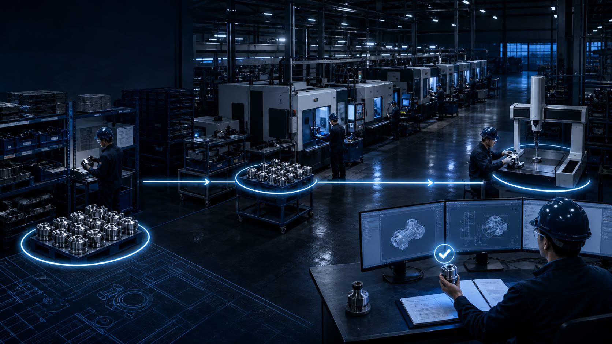
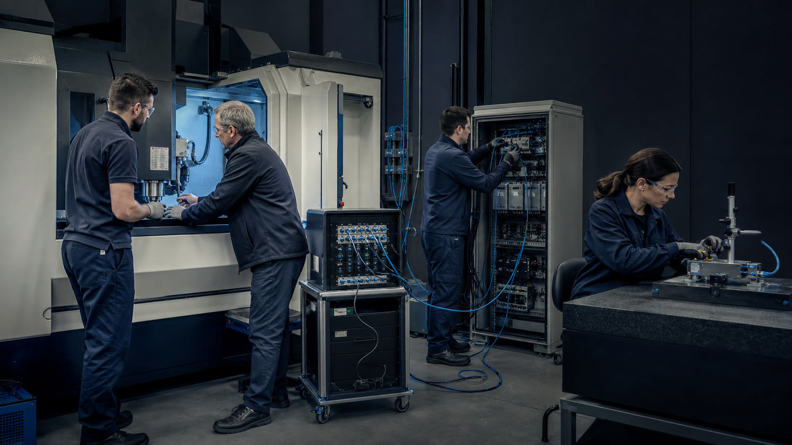

FDE
2026 / GLOBAL RESEARCH REPORT
全球 FDE
发展研究报告
为什么企业需要一种把通用人工智能
持续转化为生产结果的责任角色？
上海市大数据社会应用研究会20 页 · 一条连续推理
01
今天不从一个岗位名称讲起。我们只追问：模型能力越来越强以后，为什么企业仍然很难得到一个能在真实环境运行、能被业务验收、出了问题有人继续负责的系统？FDE 是报告对这组现实问题的回答。
01 / THE INDUSTRIAL GAP上一问：AI 为什么不会自动产生工业价值？
企业获得通用模型，不等于获得生产结果。
≠
下一问：市场上已有许多相邻岗位，为什么仍需 FDE 统一识别？
来源：V67 摘要第 1、3 段；第二章第一至二节。边界：模型能力与生产责任并非彼此否定。
02
企业不缺一个会回答问题的模型。真正困难的是，模型必须知道这家企业的客户、数据、历史系统、审批权限和异常边界，最后还要有业务验收。模型提供通用能力，生产结果却发生在具体组织里。
02 / NAMES TO FUNCTIONS回答上一问：名称说明侧重，责任决定是不是 FDE
七类称呼只是技术切口；四项连续责任才是统一标准。
真实现场→需求与验收→生产交付→运行改进
下一问：不依赖头衔，FDE 应怎样正式定义？
来源：V67 第一章第二至三节、图 1-2 相关文字。边界：七类为研究观察样本的命名分类，不是统一行业标准。
03
AI、模型、数据、云、行业、软件和解决方案分别强调不同入口，但不是七种彼此隔绝的职业。一个岗位即使叫 FDE，如果只负责售前演示，也不自动构成 FDE；相邻岗位只要四项责任完整贯通，也可能承担同构职责。
03 / DEFINITION回答上一问：用责任而不是英文头衔下定义
本报告将 FDE 定义为
直接接触客户真实业务环境，基于现场信息形成需求规格与验收指标，将系统交付至客户生产环境，并在运行中持续迭代、对实际结果负责的职业角色。
接触现场形成标准交付生产持续负责
下一问：这四项责任怎样落实，又如何避免“一个人包办一切”？
来源：V67 摘要第 1 段、第一章第三节。边界：允许团队协作与远程进入真实系统，不要求个人全栈包办。
04
FDE 不是更会写代码的售前，也不是换名的驻场开发。关键有四个：直接取得真实业务信息，与客户共同形成需求和验收，让系统进入生产，上线以后继续根据结果改进。
04 / CONTINUOUS RESPONSIBILITY回答上一问：专业分工存在，整体责任不能消失
四项职责可以多人协作，但必须由明确主体保持整体责任。
- 01看现场取得真实数据、系统和业务人员信息
- 02定标准共同形成需求规格与成功标准
- 03推生产让系统承担真实负载并完成工程协作
- 04盯结果把运行问题持续带回下一版
专业边界安全、复杂集成、部署与运维由相应工程人员按风险承担；FDE 维护问题、设计、验收与结果的连续性。
下一问：这套职责已经形成真实职业，还是仍停留在理论归纳？
来源：V67 第一章第三至四节、第二章第五节。边界：四项责任不是固定团队编制。
05
四件事可以说得很朴素：看现场、定标准、推生产、盯结果。FDE 可以调动架构、安全、测试、部署和运维人员，但必须有人一直知道最初解决什么问题、怎样算成功、上线以后发生了什么。
05 / MARKET SIGNAL回答上一问：不同雇主已经把复合职责写入岗位与组织
招聘与调研证明职责正在扩散，但样本不等于岗位总量。
观察样本用于名称与雇主分析
严格样本用于职责与能力分析
国内相关企业不代表全国企业总量
685 份职位说明的共同底座客户协作 · 系统接口 · Python · 智能体 · 大语言模型 · 云平台 · 数据工程
下一问：类似工作过去也存在，为什么 AI 时代更需要端到端责任？
来源：V67 第一章第二节、第三章第一节；研究数据库截至 2026-08-09。边界：三种口径不可相加。
06
报告观察到 5,856 个 FDE 及高度相关岗位，并从中取得 685 份职责完整的一手职位说明；国内调研确认了 45 家相关企业。数字证明职业可观察，不是全球或中国岗位存量。
06 / HANDOFF BOTTLENECK回答上一问：实现加速后，认知断裂占比上升
AI 越快，跨部门转述、等待与上下文重建越可能拖慢整体交付。
业务→顾问→产品→开发→交付
CRM
客户承诺+ERP
库存采购+MES
排产质量
客户承诺+ERP
库存采购+MES
排产质量
AI 比较方案；业务负责人审批风险；FDE 打通接口、设置人工接管并组织验收。
下一问：AI 的实现能力是否真的达到足以改变分工的水平？

来源：V67 第一章第四节、第二章图 2-1。边界：加急订单用于解释跨系统责任，不代表所有制造企业采用同一系统组合。
07
一笔加急订单的客户承诺在 CRM，库存采购在 ERP，排产质量在 MES。AI 可以比较方案，却不能替负责人决定愿意承担哪种风险。如果问题层层转述，代码生成再快，项目仍会被等待和误解拖住。
07 / FIELD EXPERIMENT回答上一问：实现条件已经变化，但生产责任没有消失
AI 已稳定压缩部分实现劳动，但不能替代完整企业交付。
+26.08%完成任务数量
微软对 4,867 名软件开发者开展三项随机现场试验
下一问：局部实现提速怎样改变企业定制化的整笔账？
来源：Microsoft Research, 2025；V67 第二章第四、六节。边界：26.08% 不等于完整项目周期、利润或企业生产率变化。
08
微软对 4,867 名开发者的三项随机现场试验显示，使用 AI 编码助手的组完成任务数量提高 26.08%。这证明实现环节改变了，却不能说明完整项目也按同样比例提效。
08 / NEW ECONOMICS回答上一问：不是一笔编码费下降，而是三条成本路径同时变化
AI、连续责任与行业复用，共同让更多细分需求越过经济可行线。
过去无法交易的需求→预算更小 · 流程更细 · 变化更快，也开始可以验证
完整成本仍在复杂数据治理、系统集成、安全、部署与运维必须单独计价并承担责任。
下一问：全球企业是否已围绕这套机制形成真实组织与经营？
来源：V67 摘要第 5 段、第二章第三至六节。边界：报告透明情景不是市场平均成本。
09
AI 降低首次实现成本，FDE 减少交接错判与返工，同一行业的接口、规则和测试又能进入下一家客户。三股力量合起来，才让过去预算太小、需求太细的项目有机会成立。
09 / GLOBAL PRACTICE · TECHNOLOGY回答上一问：平台、模型和云都已建立专门部署组织
通用技术只有进入客户生产并把现场经验送回产品，才能形成持续收入。
现场对象、接口与流程回流 Foundry / AIP
2021—2025 营收：15.42 亿 → 44.75 亿美元从场景选择、系统构建到生产推广形成专门组织
专门组织承接完整部署与客户结果5—6 人客户小组：观察、共建、客户自主运行
10 亿美元投入；45 天为公开标准节奏下一问：没有自有平台或模型的专业服务机构，能否围绕结果形成 FDE 交付？
来源：V67 第三章第二节；Palantir 2025 Form 10-K/8-K；OpenAI 2026-05-11；AWS 2026-06-30。边界：三组数字不可横向相加。
10
Palantir 把现场经验写回平台；OpenAI 设立 Deployment Company，并通过 Tomoro 补充部署能力；AWS 用小组和标准节奏连接共建与客户自主运行。Anthropic、Microsoft、Google Cloud 只作为辅助观察，不增加主案例。
10 / GLOBAL PRACTICE · DELIVERY回答上一问：咨询与独立服务也能形成连续交付
行业判断只有进入系统构建、生产运行与核验，才从方案劳动变成 FDE 交付。
诊断→构建→上线→改进
在英国和爱尔兰设置 FDE 职能，把行业方法推进到生产结果。
定义结果→连接系统→核验成果
共同设置知识接入、人工转接与安全边界，依据运行数据优化。
适用边界结果付费仅适用于边界清楚、基线稳定、数据可核验且外部影响可隔离的流程。
下一问：五类路径跨越不同收入模式后，共同证明了什么？
来源：V67 第三章第二节；EY 2026-04；Sierra 客户侧工程资料。边界：两个主案例不外推为行业普遍效果。
11
安永把诊断与方案继续推进到构建、上线和改进。Sierra 把可核验结果放入合同与运行机制，迫使双方先说清基线和核验方法。Distyl AI 只作为独立服务向产品能力回流的辅助证据。
11 / GLOBAL PRACTICE · SYNTHESIS回答上一问：五类实践共享四个机制，也共享一个边界
全球实践证明 FDE 能进入真实经营，却未证明重驻场模式可原样覆盖中国中小企业。
平台产品
Palantir模型部署
OpenAI DC云基础设施
AWS咨询实施
安永结果合同
Sierra
Palantir模型部署
OpenAI DC云基础设施
AWS咨询实施
安永结果合同
Sierra
已经证明责任角色进入产品采用、模型调用、云用量、咨询服务与直接交付。仍未证明长期单位经济、中小企业覆盖与客户自主运营已经普遍成立。
下一问：中国的产业结构要求怎样的不同路径？
来源：V67 第三章第三至四节。边界：五个主案例不外推为所有企业的普遍效果。
12
五个主案例共同证明责任连续、资产回流、客户自主和摆脱纯人力线性。但成熟实践仍主要面向大型客户，常依赖较高客单价和较重工程投入，不能直接成为中国答案。
12 / CHINA · THE GAP回答上一问：中国需要覆盖数字化基础不均的广大企业
中国的机会不是复制重驻场，而是让中小企业也能获得合身的定制系统。
9,400 余家专精特新中小企业调查
73.8%
25.3%
4.8%
3.6%
近期入口：连接旧系统、减少重复报表、让经营信息流动，而不是先替换产线。
下一问：高度具体且数据敏感的问题，能否先从企业内部长出 FDE？
来源：中国信通院《专精特新中小企业数字化转型研究报告（2024 年）》；V67 第四章。边界：调查不代表全部制造企业。
13
9,400 余家专精特新中小企业调查显示，ERP 采用较高，MES 和数字化运维明显较低。中国近期机会往往不是先替换生产线，而是连接已有系统、减少重复报表并组织经营信息。
13 / CASE · INTERNAL FDE回答上一问：最懂专业边界的人可以直接参与系统定义
数据敏感、知识隐性、需要长期运行的场景，更适合从内部培养 FDE。
上海星瀚律师事务所
下一问：中小企业养不起完整团队时，外部行业型 FDE 怎样组织供给？
来源：李泽辰访谈资料，2026-07-13；V67 第四章案例。边界：单一访谈案例不外推为法律行业普遍效果。
14
星瀚律所没有强制所有律师更换同一套工具，而是让法律背景成员组成科技小组，逐一适配场景并处理本地部署和脱敏。案例的意义在于最懂专业边界的人进入了需求、权限和验收。
14 / CASE · EXTERNAL FDE回答上一问：社群、临时组队与行业复用降低单人约束
外部行业型 FDE 必须重新组合需求、行业判断与工程能力。
HA7CH / FDE 加速器连接独立 FDE · 行业专家 · 开发者 · 企业需求
降本增效与轻量切入
流程、能力与工作系统
预算、数据、安全与责任

下一问：内部与外部两条路径怎样协同，而不是彼此替代？
来源：Lawted 访谈资料，2026-07-20；HA7CH 公开框架；V67 第四章案例一。边界：单一社群案例不代表市场规模。
15
HA7CH 用社群和 FDE 加速器连接独立从业者、行业专家、开发者和企业需求。Lawted 发现，不同企业首先关心的问题不同，因此问题选择、产品复杂度和验收口径也必须变化。
15 / CHINA · TWO PATHS回答上一问：一条保留企业知识，一条分摊行业成本
中国特色道路是两条路径互补，并按风险调用专业生产工程能力。
适合核心、敏感、知识隐性且需长期运行的场景；问题、权限和组织知识留在企业。
适合中小企业与阶段性需求；复用流程、接口、评估、测试和工程组件。
编程智能体：高频执行+专业生产工程：复杂集成 · 安全 · 测试 · 部署 · 运维→同一业务结果
下一问：企业面对这套供给结构，第一步应该做什么？
来源：V67 摘要第 7—9 段、第四章第二至四节。边界：两条路径可组合，不预设唯一人才来源或固定团队规模。
16
内部 FDE 保留本企业流程、权限和风险知识；外部行业型 FDE 跨企业复用接口、测试与行业方法。智能体负责高频执行，复杂生产责任由专业工程人员按风险介入。
16 / START FROM A REAL FLOW回答上一问：以小范围真实生产验证代替宏大规划
企业不应从“全面智能化”开始，而应先选一个结果说得清的流程。
- 01选真问题高频、有价值、数据可得，业务负责人有权推动
- 02先写验收明确业务指标、人工接管、权限、安全与退出安排
- 03小步进生产保留人工兜底，让运行结果决定是否扩展
不要写建设企业大模型→应该写哪项业务结果改善到什么程度
下一问：试点上线后，怎样区分真实交付成功与一次演示成功？
来源：V67 第五章第七节“企业行动”、第二章第四与六节。边界：不承诺固定周期或固定 ROI。
17
不要从建设企业大模型开始。先选一件高频、有数据、有人负责的真问题；开发前写清怎样算成功和何时人工接管；再让小版本进入真实环境，用运行结果决定下一步。
17 / PRODUCTION EVIDENCE回答上一问：系统上线只是接受检验的开始
业务结果、系统质量、客户自主与跨项目复用，必须同时经得住验证。
评价方法各行业只在同一系统、同一业务口径内连续比较，不合成跨行业通用分数。
下一问：效率与质量改善以后，收益应该进入哪里？
来源：V67 第二章第四、六节，第三章第三节，第五章第七节。边界：建设期较高人工投入不等于组织失败。
18
上线只是系统开始接受检验。业务结果、系统质量、客户自主和跨项目复用必须同时改善；复用增加却带来更多故障，只是把成本转移给客户。
18 / VALUE DISTRIBUTION回答上一问：效率不是终点，传导条件决定长期价值
FDE 只有让企业、劳动者和更多中小企业共同受益，才形成健康产业价值。
减少重复成本，提高质量与迭代密度，形成继续投入数智能力的空间。
从标准执行转向问题判断、流程建模、例外处理、系统组织和验收。
行业资产复用与更短服务半径，让中小企业也能获得合身系统。
成立条件若效率只表现为裁员、强度上升或供应商锁定，不能推出劳动者发展与高质量增长。
最后一问：模型继续变强以后，FDE 为什么仍有长期存在的理由？
来源：V67 摘要末段、第五章第五至六节。边界：不从单个项目推导利润、就业或宏观增长。
19
效率必须进入企业持续投资、劳动者能力发展和中小企业可获得的数智能力。FDE 不是新质生产力本身，而是把通用 AI 转化为企业现场可验证生产能力的一种职业载体。
19 / FINAL ANSWER
FDE 长期存在，
不是因为模型还不够强。
企业现实始终需要有人把行业经验、系统取舍、组织协调和结果责任，持续组织成可运行、可验收、可改进的生产能力。
通用能力进入具体产业→真实结果形成→运行反馈进入下一版
上海市大数据社会应用研究会打开 V67 完整报告 ↗
20
模型会继续变强，但企业的客户结构、流程例外、历史系统、权限、安全、组织协调和结果责任不会自动消失。FDE 的长期价值，是持续把行业经验和 AI 执行组织成最终由企业掌握的生产系统。